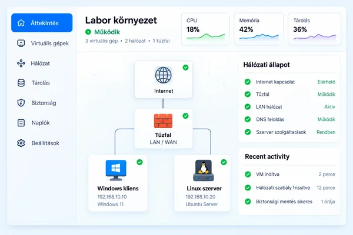
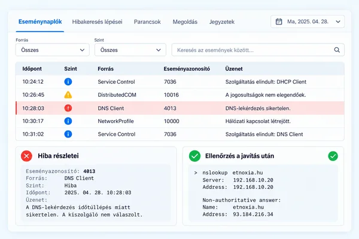
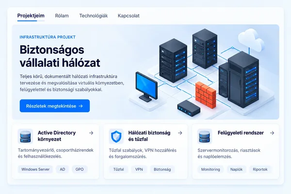
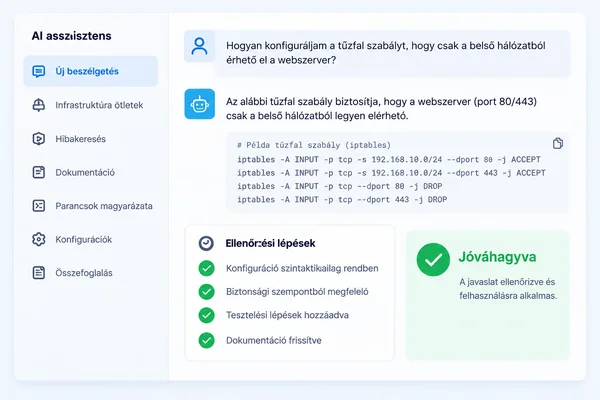

Informatikába váltanál?
Szeretnéd tudni, mi mire épül, és hol érdemes elindulnod. Az első kurzus összefüggő IT-alapokat és saját, bemutatható projektet helyez a középpontba.
Ezzel kezdhetsz Etnoxia
Etnoxia
GYAKORLATIAS TANULÁS
Értsd meg a rendszerek működését, gyakorolj valós példákon, és használd az AI-t tudatosan. Akár pályaváltásra készülsz, szakmailag fejlődnél, vagy a mindennapi munkádban szeretnél magabiztosabb lenni, az Etnoxián ehhez gyakorlati ismereteket találsz különböző tudásszinteken.
A részletes Etnoxia-bemutatóvideó hamarosan érkezik.
HONNAN INDULSZ?
Más IT- és AI-tudásra van szükséged attól függően, hogy pályát váltasz, a munkádban szeretnél fejlődni, vállalkozást vezetsz, vagy egyszerűen magabiztosabban használnád a digitális eszközöket. Az Etnoxia tananyagait ezekhez a különböző helyzetekhez tervezem, hogy könnyebben megtaláld a céljaidhoz illő következő lépést.
Szeretnéd tudni, mi mire épül, és hol érdemes elindulnod. Az első kurzus összefüggő IT-alapokat és saját, bemutatható projektet helyez a középpontba.
Ezzel kezdhetszIsmersz eszközöket és fogalmakat, de még nem mindig áll össze a működésük. A vezetett labor és a hibakeresési feladatok segítenek összekapcsolni őket.
Nézd meg a tanulási útvonalatA saját területed mellé infrastruktúra-ismeretet és tudatos AI-használatot keresel. Nézd át az első kurzus alapozó témáit és a tervezett mélyebb irányokat.
További tanulási irányokÁtláthatóbb adatkezelés, kevesebb ismétlődő kézi feladat, tudatos eszközválasztás: a későbbi üzleti tananyagokban ilyen helyzetekre tervezek gyakorlati példákat. Ha vállalkozóként szeretnéd hatékonyabban használni az IT-t és az AI-t a mindennapi munkában, ezek a témák neked szólnak.
Tervezett üzleti témákKözös IT-alapok, pontosabb hibajelzés és az AI-válaszok ellenőrzése a munkában: ezek a későbbi, munkatársaknak szóló tartalmak tervezett fókuszai. Ha a csapatod számára gyakorlatban is használható IT- és AI-tudást keresel, érdemes követned az új képzéseket.
Kérek hírt az új tananyagokrólELSŐ KURZUS · ELŐKÉSZÍTÉS ALATT
A számítógéptől a működő infrastruktúráig
Értsd meg, hogyan kapcsolódik össze a géped, az operációs rendszer, a hálózat és a szolgáltatás. Erre épül a saját gyakorlókörnyezeted, a hibakeresés és a projekted bemutatása.

Windows kliens, Linux szerver és tűzfalként működő virtuális gép. Megtervezed, vezetetten felépíted, majd ellenőrzöd a kapcsolatukat.

Hibás laborhelyzeteken gyakorolsz. Leírod, mit vizsgáltál, mit találtál, és hogyan ellenőrizted a javítást.

A saját infrastruktúra-projektedből átlátható dokumentációt, GitHub-bemutatót és egyszerű landing oldalt készítesz.

Elkülönített környezetben próbálod ki az AI-val támogatott fejlesztést, és átgondolod egy üzleti mintafolyamat automatizálását.
Az „IT rendszerek alapjai” kurzus jó belépő lehet számodra, ha már önállóan használod a számítógépet. Mély hálózati, Linux- vagy programozási előismeret nem szükséges. Az első kurzus rendszerszemléletet alapoz meg, a mélyebb szakmai specializáció pedig későbbi irány.
A tematika a készülő kurzus terve. A végleges tartalomról és az indulásról a hírlevélben is értesülhetsz.
HOGYAN TANULUNK?
Az első kurzus leckéit rövid magyarázatokkal, ábrákkal, szöveges összefoglalókkal, gyakorlatokkal és tudásellenőrzéssel tervezem.
Átlátod az elemek szerepét és kapcsolatát. Saját szavaiddal is el tudod mondani, hogyan működik a rendszer.
Először vezetetten gyakorolsz, majd önálló feladatban alkalmazod a tanultakat. A hibák feltárása is része a tanulásnak.
Dokumentálod a döntéseidet és az eredményt. Így a tudásod egy később is elővehető, bemutatható munkában jelenik meg.
Az AI-használatban nagyon fontos a kritikus gondolkodás és az ellenőrzés. A kurzusokban magabiztos és tudatos AI-használatot sajátíthatsz el, elsősorban gyakorlati feladatokon keresztül.
PRÓBÁLD KI A GONDOLKODÁSMÓDOT
Mielőtt bármit átállítasz, gondold végig, mi változott, mi működik továbbra is, és mit tudsz biztonságosan ellenőrizni.
A lényeg: a tünetből vizsgálható kérdéseket fogalmazol meg, majd lépésről lépésre szűkíted a lehetséges okokat. Így nem találgatsz, hanem követhető módon jutsz el a megoldásig.
AZ OKTATÓRÓL
Több mint 15 éve dolgozom nagyvállalati IT-környezetben. IT-üzemeltetésből érkeztem, ma pedig Oracle adattárház-fejlesztőként dolgozom Magyarország egyik legnagyobb adattárházi környezetében.
A munkámban fontos, hogy átlássam az összefüggéseket, vissza tudjam követni a hibákat, és a megoldásokat ellenőrizhetően, dokumentált módon valósítsam meg.
Az Etnoxián ezt a gyakorlatias, rendszerszemléletű megközelítést szeretném továbbadni. Ne csak kövesd a lépéseket, hanem értsd is, mit és miért csinálsz, tudd biztonságosan kipróbálni, és ellenőrizd az eredményt AI-támogatott feladatok és fejlesztések esetén is.
Szakmai hátterem és projektjeimTOVÁBBI TANULÁSI IRÁNYOK
Az Etnoxia az „IT rendszerek alapjai” kurzussal indul. Később közérthető alapozó, szakmai elmélyülést segítő, valamint a mindennapi munkában használható IT- és AI-tananyagok készítését is tervezem. Az új tananyagokról és kurzusokról a hírlevélben értesülhetsz elsőként.
A mindennapi digitális eszközhasználat, az alapvető IT-fogalmak és a tudatos AI-használat azoknak, akik kisebb lépésekben kezdenének.
Ha már vannak alapjaid, és egy választott területen mélyítenéd a tudásod, később például hálózatokkal, rendszerüzemeltetéssel, SQL-lel és adatfeldolgozással kapcsolatos tananyagokat is tervezek.
Ha a mindennapi munkában szeretnél hatékonyabbá válni, a későbbi tananyagokban a fájlok és adatok kezelésével, az ismétlődő feladatok optimalizálásával és az AI-val támogatott munkafolyamatokkal is foglalkozom.
TANANYAGOK ÉS ESZKÖZÖK
A később elérhető tananyag a tanuláshoz szükséges magyarázatokat és feladatokat tartalmazza. Számítógépet, szoftverlicencet és külső szolgáltatásokhoz előfizetést nem biztosít.
A leckéket saját eszközödön dolgozod fel, és a gyakorlati feladatokat is azon végzed el. A szükséges gépigényt, szoftvereket és hozzáféréseket az adott tananyag leírásában találod majd.
A bemutatóvideókban például fizetős ChatGPT-előfizetést használok. A tananyagok nem biztosítanak hozzáférést a bemutatókban használt külső szolgáltatásokhoz. Az esetleg szükséges előfizetésekről és szoftverlicencekről külön kell gondoskodnod.
A kurzusok feldolgozása során elsősorban ingyenesen használható eszközökkel dolgozunk, de egyes esetekben fizetős szoftverek vagy szolgáltatások is előfordulhatnak. Ilyenkor, ahol lehetséges, ingyenes alternatívát is javaslok. A bemutatókban ugyanakkor azokat az eszközöket használom, amelyek széles körben elterjedtek, vagy a saját tapasztalatom alapján hatékonyabbak az adott feladat megoldására.
Az egyes tananyagoknál előre jelzem a feladatokhoz használt eszközöket és a lehetséges alternatívákat.
MIELŐTT TOVÁBBLÉPSZ
Az Etnoxián később egyszerűbb alapozó tananyagokat is tervezek. Az első, „IT rendszerek alapjai” kurzushoz viszont már legyen biztos fájl- és mappakezelési, böngészőhasználati és alkalmazástelepítési rutinod. Egyszerű angol technikai feliratokkal is találkozol majd, de a magyarázatok magyarul készülnek.
Akkor lehet hasznos, ha a saját szakterületed mellett szeretnéd jobban érteni az infrastruktúrát, összekapcsolni a meglévő ismereteidet, vagy tudatosabban használni az AI-t. Ha rutinos infrastruktúra-szakember vagy, nézd át a tematikát: a mélyebb specializáció a későbbi tananyagok lehetséges iránya.
A kurzus előkészítés alatt áll. Az indulás időpontjáról és az elérhetőség részleteiről a megjelenés előtt tájékoztatást adok. A hírlevél-feliratkozás ingyenes, és nem jár semmilyen kötelezettséggel.
A kurzust saját tempóban feldolgozhatóra tervezem. A videók mellett önálló gyakorlásra is számíts, a laborok pedig több virtuális gépet is használhatnak. A javasolt gépigényt, a szükséges hozzáféréseket és a végleges időigényt a kurzus végleges leírásában teszem közzé.
A bemutatókban használhatok fizetős szolgáltatásokat, de ezek nem minden esetben szükségesek a feladatok elvégzéséhez. Az adott tananyag leírásában előre jelzem, mely eszközök szükségesek, melyek opcionálisak, és ahol lehetséges, ingyenesen használható alternatívákat is bemutatok. Tananyagok és eszközök részletei
A tervezett kurzus gyakorlati tudást és bemutatható saját munkát helyez a középpontba. Államilag elismert szakképesítést vagy állást nem ígér. A megszerzett alapokra további tanulást és saját projekteket építhetsz.
Igen, ha az IT- és AI-használat megértése, a biztonságtudatos munkavégzés és az automatizálás érdekel. Az első kurzus technikai alapozás, de a későbbiekben üzleti és munkatársi tananyagok készítését is tervezem. Az újdonságokról ugyanebben a hírlevélben értesülhetsz.
A KÖVETKEZŐ LÉPÉS
Iratkozz fel, és értesülj elsők között a készülő tananyagokról és a képzések indulásáról.